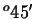
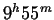

Next: About this document ...
Planetary Astronomy. Quiz 1
- Match each scale of the universe to the most appropriate length unit:
- Human size kpc
- Planet size Mpc
- Solar system size meter
- Galaxy size mile
- Distance between galaxies AU
- How many Earth diameters fit across the Sun's diameter?
- 3.26 (b) 26 (c) 110 (d) 10.2 (e) 400
- What vital piece of information about stars is lost when we talk
about their locations ``on" the sky (or ``on" the celestial sphere)?
- The spin axis of the Earth is projected onto the
on the celestial sphere.
- horizon
- north and south celestial poles
- cardinal points
- celestial equator
- tropic of capricorn
- Ada is located at 83 W longitude and 40 N latitude.
What is the altitude (in degrees) of the north celestial pole, as seen from Ada?
Planetary Astronomy. Quiz 2
- What is unusual about the Moon's rotation period?
- It is the same as the Earth's revolution period.
- It does not rotate relative to the stars.
- It is the same period as the Moon's revolution about the Earth.
- It makes the Moon look full.
- The apparent path of the Sun across the sky is known as
the .
- If the seasons are defined as a periodic change in temperature on Earth,
then they are directly explained by: (note: the tilt of the Earth's axis is
an indirect explanation.)
- the ecliptic.
- the change in the length of the day.
- the change in the directness of the Sun's rays.
- the changing distance to the Sun.
- b and c combined.
- Which is true of stellar parallax?
- the larger the parallax angle, the farther the star
- the greater the baseline, the farther the star
- the greater the baseline, the larger the parallax angle
- the farther the star, the smaller the Earth's orbit
- The tilt between the Moon's orbital plane and the ecliptic plane is
most nearly .
- 50
 (b) 5 degrees (c) 23.5 degrees (d) 50 degrees
(e) 45 degrees
(b) 5 degrees (c) 23.5 degrees (d) 50 degrees
(e) 45 degrees
Planetary Astronomy. Quiz 3
- T or F. The total mass of all the planets is about half the
mass of the Sun.
- T or F. Some terrestrial planets have no Moons.
- T or F. MER-A, or ``Spirit" is the most recent probe to land on Venus.
- T or F. A planet with a density of 5000 kg/m most likely has a
gaseous composition.
- Which type of planet, Jovian or Terrestrial, has the higher ...
(1 pt each)
- spin rate? (J or T) ?
- mass? (J or T) ?
- radius? (J or T)( ?
- distance from the Sun? (J or T) ?
- density? (J or T) ?
- (1 pt) Name a space mission that observed Jupiter.
Planetary Astronomy. Quiz 4
- The driving force behind plate techtonics is thought to
be .
- magnetic fields (b) rotation (c) earthquakes
(d) convection (e) differentiation
- The stage of Earth's formation which involved the sinking
of dense material (like iron) to the core is called
- differentiation
- cratering
- flooding
- slow surface erosion
- The analysis of seismic waves has shown us that the Earth
- is rotating
- has a creamy, caramel center
- has a liquid inner core
- has a liquid outer core
- has a magnetic inner core
- Which layer of the Earth's atmosphere contains most
of the clouds and weather?
- troposphere (b) lithosphere (c) mesosphere
(d) stratosphere (e) ionosphere
- Which is bigger, Earth's atmosphere, or Earth's magnetosphere?
?
- T or F? Because of the tides, the Earth's rotation rate is slowing
down.
Planetary Astronomy. Quiz 5
- T or F. Venus appears brighter in the nighttime sky than any star.
- T or F. There is strong circumstantial evidence that active volcanism
continues on Venus.
- T or F. The thick atmosphere of Venus prevents some meteoroids from
reaching the surface intact.
- T or F. Venus has plate techtonics much like the Earth.
- The surface temperature of Venus is about
, while the average on Earth is about 290 K.
- 200 K (b) 373 K (c) 560 K
(d) 730 K (e) 990 K
- The primary constituent of Venus' atmosphere is .
- carbon dioxide (b) sulfur dioxide (c) oxygen (d) argon
(e) water vapor
- T or F. Mercury has a rotation period relative to the stars that is shorter
than its revolution period around the Sun.
- Which theory is most likely for the formation of the Moon?
- the coformation, or sister theory
- the capture theory
- the fission, or daughter theory
- the impact theory
Planetary Astronomy. Quiz 6
- Galileo's atmospheric probe found this gas to be less abundant than
expected, but it is still the second most abundant gas in Jupiter's atmosphere.
- Oxygen (b) Water vapor (c) laughing gas (nitrous oxide)
(d) Hydrogen (e) Helium
- Jupiter can retain light gases like H and He because of its
- heat of collapse (b) chemical bonds (c) strong magnetic field
(d) large escape velocity
- The main difference between planets and stars is
- stars emit electromagnetic radiation
- stars have enough mass for nuclear fusion to occur
- stars are mostly made of hydrogen
- only stars get hotter than 6000 K
- Jupiter's  rotation period is defined by its
which has about the same period as Jupiter's polar clouds.
- equatorial cloud decks (b) tropical belt clouds (c)
Great Red Spot (d) magnetic field
- Although it is not the most dense moon around Jupiter,
is the largest of the Galilean satellites.
- Callisto (b) Io (c) Ganymede (d) Europa (e) Adrastea
- Shoemaker-Levy 9 was a .
- comet (b) space mission (c) asteroid (d) Jovian moon
Planetary Astronomy. Quiz 7
- The inventor who first understood the rings of Saturn to be
orbitting particles and also discovered Titan was
- John Locke (b) Rene Descartes (c) Anton Lee van Hoek
(d) Giovanni Cassini (e) Christian Huygens
- The observer who discovered the largest "gap" in the rings of Saturn
was
- John Locke (b) Rene Descartes (c) Anton Lee van Hoek
(d) Giovanni Cassini (e) Christian Huygens
- T or F? Saturn has a more colorful atmosphere than Jupiter.
- T or F? The largest gap in the rings of Saturn is caused by the largest
moon of Saturn.
- T or F? Titan has a more opaque and thick (deep) atmosphere than Earth.
- T or F? The Cosmos video ``Travellers Tales" has badly outdated information
about Saturn because of the other space missions since Voyager.
Next: About this document ...
Jason Pinkney
2004-02-23